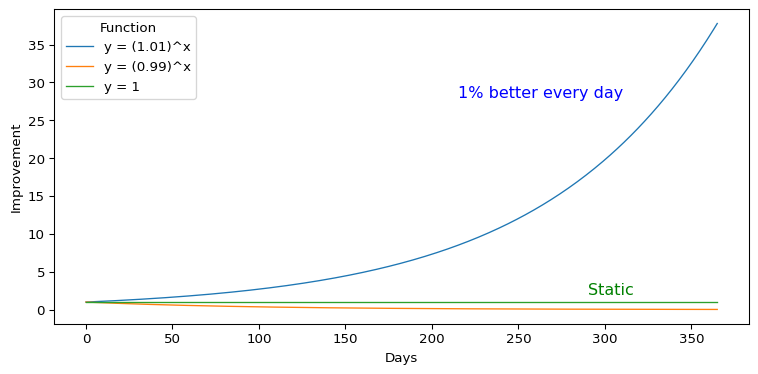
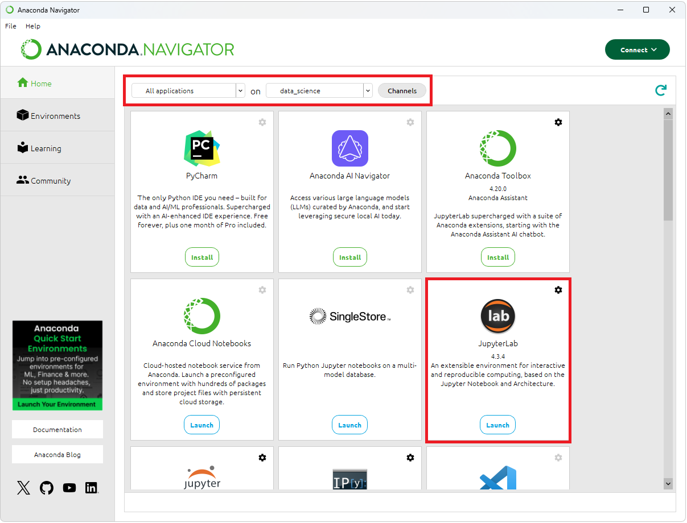
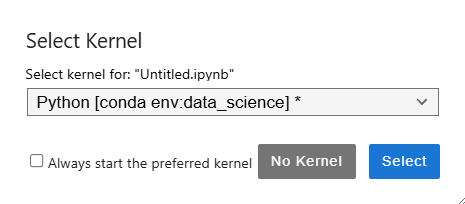
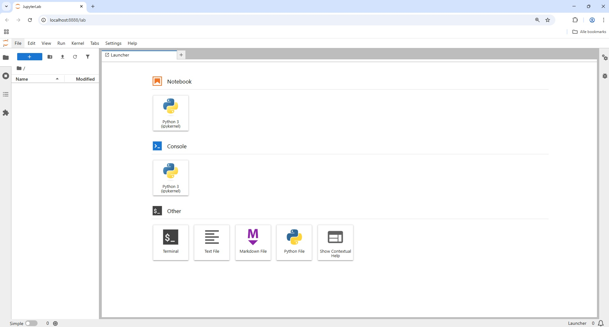
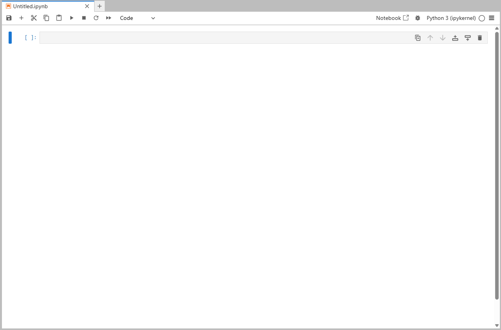

What do Spotify recommendations, fraud detection systems, and ChatGPT have in common? They all rely on data—and on programming languages to process, analyze, and act on it. In the world of data science, Python is the most widely used programming language for machine learning and data analysis. Python is an open source general programming language that can be used to develop for example software, games, and websites. However, thanks to libraries like NumPy, pandas and scikit-learn it is particularly suited for data-driven applications.
By the end of this chapter, you will have installed Python, explored its basic syntax, and loaded and visualized a real-world dataset with just a few lines of code. No prior experience with programming is required—only curiosity and a willingness to learn. If you are already familiar with Python and comfortable using Jupyter Notebooks, you may wish to skim this chapter and proceed directly to Chapter ?@sec-ch2-intro-data-science, where we introduce the data science workflow and its core concepts.
To give a concrete example, imagine working with customer data to understand why users cancel their mobile service. With Python, you can summarize call behavior, compare usage patterns across churned and retained customers, and create intuitive plots to reveal trends. For instance, you might find that customers who churn tend to spend more time on daytime calls—an insight that could inform proactive retention strategies. This kind of analysis is explored in greater detail in Chapter ?@sec-ch4-EDA.
Throughout this book, we follow a structured framework known as the Data Science Workflow, which includes seven key steps: problem understanding, data preparation, exploratory data analysis, data setup for modeling, modeling, evaluation, and communication. Each chapter builds on this framework. The foundational skills introduced here—including navigating Jupyter Notebooks, importing and manipulating data, and generating basic visualizations—will support your work at every stage. A detailed overview is provided in Chapter ?@sec-ch2-intro-data-science (see ?@fig-ch2_DSW).
Why Choose Python for Data Science?
Python is a popular programming language for machine learning and data analysis, thanks in a large part to its design philosophy by Guide van Rossum, Python’s original creator, who emphasized readability from the start. Python was designed to have an easy-to-read syntax, relying on indentation (whitespace) for code blocks like conditional statements and loops. This facilitates code that is easy to read. This helps reduce errors and makes it easy to share code amongst collaborators.
A key strength of Python is its rich ecosystem of libraries. Examples include NumPy and pandas for data manipulation, Matplotlib and Seaborn for visualization and Scikit-Learn for machine learning algorithms. Python also supports data collection through web scraping and APIs. As a free, open-source programming language with cross-platform support and a large community of active users and developers, Python offers countless libraries that greatly extend its capabilities.
In the Python community, the terms package and library are often used interchangeably. We typically refer to libraries when discussing their use in code, while the term package is used when talking about installation tools like pip or conda. Throughout this book, both terms will be used according to context.
To support and streamline your coding experience, you want to rely on an Integrated Development Environment (IDE), such as Visual Studio Code, Spyder or Jupyter. IDEs provide an intuitive interface that typically includes a script editor, a Python interpreter, syntax completion and error highlighting, a filesystem explorer, and tools for managing plots. While various IDEs offer unique features and strengths, this book focuses on Jupyter as it is particularly well-suited for data analysis. Its cell-based workflow, which combines formatted text and code with clear visualization outputs, enables easy and intuitive interaction with your data.
What This Chapter Covers
This chapter is designed for true beginners—readers who may have never written a line of code before. If you are new to Python, programming, or data science, you are in the right place. Drawing on years of teaching experience, this chapter answers the most common questions students ask during lectures and labs—especially when encountering real data for the first time.
You are not expected to master every detail on your first read. Feel free to skip ahead or revisit sections as needed. This chapter is meant to serve as a practical, flexible reference: one you can return to throughout the book for reminders about syntax, data structures, visualization basics, or how to import and explore data in Python.
In this chapter, you will:
Set up your environment by installing Python and Jupyter;
Learn to navigate the Jupyter interface and run your first commands;
Understand core data structures such as lists, arrays and DataFrames;
Import datasets, install packages, and explore your data;
Create basic visualizations using the matplotlib package;
Document your work with reproducible reports using Markdown.
By the end of this chapter, you will be able to load, explore, and visualize a real-world dataset with just a few lines of code—laying the foundation for your data science journey.
How to Learn Python
Learning Python opens the door to a wide range of powerful tools in data analysis, statistics, and machine learning. If you are new to programming, the learning curve may appear steep at first. However, consistent practice, thoughtful exploration, and the right resources make the journey both manageable and rewarding.
There is no single best way to learn Python. Some learners benefit from structured textbooks, others from interactive exercises or video tutorials. For general programming skills, Think Python by Allen B. Downey is a great resource. Python for Data Analysis by Wes McKinney, the author of the pandas Library is a great guide on manipulating, processing and cleaning data. An Introduction to Statistics with Python by Thomas Halswanter provides a good introduction to using Python for statistical tests and analyses. An Introduction to Statistical Learning discusses various modeling and prediction techniques using datasets drawn from a diverse fields. Interactive platforms like DataCamp and Coursera offer hands-on practice, while YouTube channels such as Data School provide visual explanations of core concepts. As you grow more confident, communities like Stack Overflow become invaluable for answering specific coding questions and learning from others.
This mindset is well captured by James Clear’s concept of The Power of Tiny Gains, popularized in Atomic Habits: a 1% improvement each day may seem small, but it compounds into remarkable progress over time. Figure 1, created entirely in Python, illustrates this idea—and previews what you will soon be able to do: write code that explores ideas, generates plots, and communicates insights clearly and reproducibly.
Code
import matplotlib.pyplot as pltimport seaborn as snsx = [i for i inrange(0,366)]y1 = [1.01** i for i in x]y2= [0.99** i for i in x]y3=[1]*366plt.figure(figsize=(8, 4))sns.lineplot(x=x, y=y1, label='y = (1.01)^x', linewidth=1)sns.lineplot(x=x, y=y2, label='y = (0.99)^x', linewidth=1)sns.lineplot(x=x, y=y3, label='y = 1', linewidth=1)plt.text(215, 28, "1% better every day", color="blue", fontsize=12)plt.text(290, 2, "Static", color="green", fontsize=12)plt.xlabel("Days")plt.ylabel("Improvement")plt.legend(title="Function")plt.tight_layout()plt.show()

Figure 1: The Power of Tiny Gains
Learning Python is not about mastering everything at once. It is about making steady progress, one concept at a time. With each small success—loading a dataset, creating a plot, writing a function—you are building skills that will support you throughout your data science journey. Be patient, stay curious, and trust the process. Growth in programming, as in data, is often exponential—just like the green line in Figure 1.
To use Python and Jupyter, you can either rely on an online solution or install it locally on your own PC. Online environments, such as Anaconda Cloud or Google Colab, are already setup and ready to use. This makes them ideal for in-class usage, as all participants can use the same environment without requiring any support to confige Python or Jupyter. Local installations on the other hand allow for more flexibility and greater computing power (at least in comparison to free plans). In the next section, you will install Python and Jupyter—your primary tools for writing and running Python code.
How to use and install Python
Before you begin working with Python, you need to install both Python and and IDE (such as Jupyter) on your computer. There are two ways to install Python and Jupyter. You can either download Python from Python.org and install Jupyter manually (see instructions below), or download Anaconda which is a distribution of Python that already includes Jupyter as well as many preinstalled libraries including NumPy, pandas, Matplotlib and Scikit-learn. We recommend using Anaconda for easy installation and virtual environment management.
Install Anaconda
You can download the Anaconda Distribution for your operating system from https://www.anaconda.com/download. After the download is complete, run the installer and follow the on-screen instructions. Once the installation is finished, Anaconda Navigator will be ready to use. From Anaconda Navigator, you can launch JupyterLab directly.
Optional: Create a virtual environment in Anaconda
If you installed Python (including Jupyter) using Anaconda, you can start coding right away by launching JupyterLab from the Anaconda Navigator. This setup is usually sufficient for basic data science projects. However, when working on multiple projects that require different versions of Python or specific packages, it’s best to use virtual environments. Virtual environments allow you to isolate dependencies for each project, helping you avoid conflicts and prevent issues caused by package upgrades. In this section, we’ll walk you through how to create and manage virtual environments using Anaconda.
Note: If you are just getting started, you can skip this step for now and come back to it later when your project requires a more customized setup.
For Windows open PowerShell or Command Prompt. On macOS or Linux open the Terminal. Run the following command to create a new virtual environment called ‘data_science’ that clones the base installation:
conda create --name data_science python=3.14
Next, run the following command to activate the new virtual environment:
conda activate data_science
On Windows this will display: (data_science) PS C:\Users\<username>>
On macOS or Linux you will see: (data_science) username@hostname ~ %
Next, you need to install Jupyter and ipykernel by running the following command:
conda install jupyter ipykernel
Type ‘y’ to proceed
You can start Jupyter lab directly from the command prompt by typing:
jupyter-lab
Alternatively, you can start Anaconda Navigator from the Start menu (Windows) or Launchpad (macOS).

If you run Anaconda like this, make sure to select the ‘data_science’ virtual environment at the top of the screen (see image above) and subsequently launch JupyterLab.
If asked to select a kernel, select ‘Python [conda env:data_science]’:

This will ensure that you work within the new ‘data_science’ virtual environment.
Installing Python from python.org (without Anaconda)
This section explain how to setup Python and JupyterLab if you have opted to download Python directly from python.org (not via Anaconda). You can download Python for your operating system from https://www.python.org/downloads. After the download is complete, run the installer and follow the on-screen instructions. Once the installation is finished, we will create a virtual environment and install JupyterLab. It is good practice to work in virtual environment. This allows you to isolate dependencies for different projects (e.g., different versions of the pandas library), avoid version conflicts, and prevent breaking system-level Python tools or libraries. For this reason, we first setup a virtual environment. You can create a virtual environment using the built-in venv module.
Setting up Python and Jupyter on a Windows PC (without Anaconda)
First you need to create a folder for your virtual environment. This can be created inside your user folder or elsewhere, for example on ‘c:\venvs’. To create a folder on your C-drive you can run the commands below.
mkdir c:\venvs
cd c:\venvs
You can then create a virtual environment named ‘data_science’ as follows:
python -m venv .data_science
You can activate the environment from the command prompt (CMD) or Windows Powershell:
.data_science\Scripts\activate
Note: When using PowerShell, it may be required to first set the execution policy for the user. Run the following command if you received an error message stating ‘running scripts is disabled on this system’ when activating the virtual environment:
Once the virtual environment is activated, the prompt should look as follows:
(.data_science) c:\venvs>
Next, you need to install Jupyter and ipykernel by running the following command:
pip install jupyter ipykernel
Before launching Jupyter, make sure to navigate to your user folder or another directory where you want to save your data science projects.
In command prompt (cmd):
cd %USERPROFILE%
In PowerShell:
cd ~
Finally, you can run Jupyter by running the following command:
jupyter-lab
Setting up Python and Jupyter on macOS or Linux (without Anaconda)
This section explains how to set up Python and JupyterLab for macOS or Linux if you’ve downloaded Python directly from python.org (not via Anaconda). First you need to create a folder for your virtual environment. This can be inside your home directory or elsewhere — for example, a folder called venvs:
You can setup a virtual environment as follows:
mkdir ~/venvs
cd ~/venvs
You can then create a virtual environment named ‘data_science’ as follows:
python3 -m venv .data_science
Next, you can activate the environment from the command prompt (CMD):
source .data_science/bin/activate
Once the virtual environment is activated, the prompt should look as follows:
(.data_science) ... venvs %
Next, you need to install Jupyter and ipykernel by running the following command:
pip install jupyter ipykernel
Before launching Jupyter, make sure to navigate to your home folder or another directory where you want to save your data science projects For example, you can run:
cd ~
Finally, you can run Jupyter by running the following command:
jupyter-lab
Exploring JupyterLab
When you first open JupyterLab, you’ll see a layout similar to Figure 2. On the right-hand side is the Launcher, which provides buttons to create a new Jupyter notebook, open a console (an interactive Python shell), launch a terminal, or create new files such as text, Markdown, or Python scripts. We will primarily use the button to create a new Notebook.

Figure 2
On the left-hand side you will see the File Browser. This shows files anf folders in your current working directory. You can click on files to open them in tabs. Right-click options allow you to rename, delete or move files.
On the far left, you’ll find buttons that let you view and manage running terminals, browse a table of contents for Jupyter notebooks, and manage extensions through the PyPI manager.
Each notebook will open in a tab, like in in web browser. You can open multiple tabs side by side.
When you open a new or existing notebook, it appears as a tab in the main work area of JupyterLab’s interface, alongside any other open notebooks or files (see Figure Figure 2). Notebooks are made up of cells where you can write and run code interactively. In addition to code cells, you can include Markdown cells to add formatted text, explanations, and documentation. The output from running code cells appears directly below them, creating a clear and organized workflow that combines code, results, and narrative in one place.

Figure 3
You can save the file by clicking the disk button in the top left corner, which will prompt you to enter a name for the notebook. To rename the file later, right-click it in the File Browser. Use the ‘+’ button to add new cells. The next two buttons allow you to copy and paste cells. Click the play button or press Shift + Enter to execute a single cell. Output will appear directly beneath it. Use the stop button to interrupt execution. The restart button restarts the kernel. This is useful if it crashes or if you want to ensure all code cells run from a clean state. The fast forward button restarts the kernel and runs all cells automatically. Finally, the rightmost button lets you switch a cell’s type between code and markdown. Markdown cells let you write formatted text alongside your code, making your notebook easier to follow. You can also move cells up or down or delete them entirely by clicking the buttons on the right side of a cell.
Getting Help and Learning More
Learning Python can be challenging at first—but you do not have to do it alone. Today’s learners have access to powerful support tools that can dramatically accelerate the process. Among them, AI assistants like ChatGPT offer a flexible, conversational way to learn faster, get unstuck, and deepen your understanding.
With an AI assistant, you can ask questions in natural language and receive immediate, context-aware guidance. Whether you are puzzled by an error message, unsure how a function works, or looking for help writing a block of code, tools like ChatGPT provide on-demand support. They can walk you through code step-by-step, generate examples based on your description, and explain unfamiliar concepts in clear, accessible language. This makes them especially helpful during independent study or when you need quick clarification without interrupting your workflow.
That said, AI tools are not the only resource. The help() function, for example, allows you to quickly access documentation for specific functions or objects—an efficient way to explore parameters, expected inputs, and return types without leaving your coding environment.
Online communities also play an important role. Sites such as Stack Overflow provide answers to countless common problems. Searching these forums often reveals solutions or helpful patterns. If you post a new question, remember to include a clear explanation and a reproducible example.
In the end, the best way to learn Python for data science is to combine resources: practice regularly, use AI tools to speed up your learning, consult the documentation for accuracy, and turn to the community for collective wisdom. With each small step, you will become more confident in your ability to explore data, write code, and real-world problems.
Data Science and Machine Learning with Python
Imagine building a model that predicts hospital readmissions, optimizing a marketing campaign, or uncovering fraud in financial transactions—all using code you understand and control. This book will guide you through that process, showing you how to harness Python’s powerful libraries and tools to work confidently and effectively as a data scientist.
This book introduces the core ideas and practical tools of data science and machine learning, using Python as the primary programming environment. You will learn how to prepare data, build models, evaluate results, and communicate insights—applying these skills to real-world datasets throughout the book.
Python provides a solid foundation for data analysis, machine learning and data visualization. Its real strength, however, lies in its extensive ecosystem of libraries that extend its capabilities for modern data science. Tools like pandas, NumPy, scikit-learn, and matplotlib are easily accessible through package managers such as pip and conda.
Each machine learning method introduced in this book is paired with an appropriate package implementation. For example, in Chapter ?@sec-ch11-tree-models, we use scikit-learn for decision trees and ensemble methods like random forests. In Chapter ?@sec-ch12-neural-networks, we use introduce the basics of neural network modeling. These tools are introduced with clear examples and hands-on exercises to help you apply them confidently.
To support the examples and exercises in this book, we developed the [dsf] library. It includes real-world datasets and utility functions specifically designed for teaching data science with Python. Several of these datasets are listed in ?@tbl-data-table. For example, in Chapter ?@sec-ch7-knn, we use one of these datasets to demonstrate the k-nearest neighbors (kNN) classification algorithm.
For those interested in going further, the Python ecosystem offers thousands of additional libraries covering areas such as text mining, forecasting, deep learning, and geospatial analysis. Many of these libraries are available through the Python Package Index (PyPI) or conda-forge. You can explore the full PyPI repository at https://pypi.org, or browse curated scientific libraries via https://anaconda.org/conda-forge.
As you progress through this book, you will become not only proficient in Python but also fluent in using its rich ecosystem of libraries to tackle real data science challenges. With curiosity and consistent practice, these tools will become part of your everyday workflow.
How to Install Python Libraries
Libraries are central to working in Python. They extend its core capabilities and allow you to perform specialized tasks such as data wrangling, modeling, and visualization. Many examples in this book use contributed packages. You will be prompted to install them as needed.
Installing libraries
Python is an open-source, general-purpose programming language used in a wide range of applications, including web development, software creation, and data science. Each of these use cases relies on different libraries, which are not included by default to avoid unnecessary disk usage and to keep the installation size manageable. Similarly, libraries are not loaded into memory unless explicitly imported, helping to conserve system resources and minimize memory usage.
You can install new libraries directly from the command prompt / terminal or from within a notebook cell.
For example to install the pandas library, you can run the following command in the command prompt or terminal (after activating the virtual environment):
pip install pandas
Or you can preceed this command with a percentage sign and run it directly within a notebook cell:
%pip install pandas
Anaconda comes with its own package manager called conda. Therefore, if you’re using Anaconda, it’s recommended to use conda instead of pip whenever possible, as it better manages dependencies within the Anaconda environment:
conda install pandas
Or you can precede this command with a percentage sign and run it directly within a notebook cell.:
%conda install pandas
If you install new libraries from within a notebook (using %pip or %conda) it might be required to restart the kernel before you can import the new library.
Libraries only need to be installed once. However, each time you open a new Jupyter session, you must load the library using the import statement. This will be explained in the next section.
How to Load Python libraries
Once a library is installed, you need to load it into your Python session before you can use its functions and datasets. Python does not automatically load all installed libaries; instead, it loads only those you explicitly request. This helps keep your environment organized and efficient, avoiding unnecessary memory use and potential conflicts between libraries.
To load a library, use the import statement. For example, to load the pandas library, press the play button or Shift + Enter:
import pandas as pd
If you see an error such as "ModuleNotFoundError: No module named 'pandas'", the library has not yet been installed. In that case, return to Section 1.8 to review how to install packages using either pip or conda.
Note that we import pandas as pd. This implies that we use pd as an alias for pandas. This follows community convetions, saves typing and improves readability throughout your code.
While installing a library makes it available on your system, loading it with import is necessary each time you start a new Python session. Only then will its functions and datasets be accessible in your workspace.
As you progress through this book, you will use several other libraries, such as matplotlib for visualization and scikit-learn for machine learning algorithms. Each library is introduced when needed.
Running Your First Python Code
One of the most empowering aspects of Python is that it responds instantly to your commands. This immediate feedback makes it ideal for experimentation, learning, and developing intuition through trial and error. Suppose you just made three online purchases and want to calculate the total cost. In Python, you can do that instantly:
38.23+11.78+34.56+15.43
100.0
Press the play button or Shift + Enter to execute the code cell. It returns the result. You can also try subtraction, multiplication, or division. Feel free to change the numbers and experiment with different operations.
You can store the result in a variable for later use:
total =38.23+11.78+34.56+15.43
The = symbol is Python’s assignment operator: it stores the value on the right under the name on the left. You can think of it as adding a labeling to an object.
Once a value is stored, you can reuse it in future calculations. For example, to add 21% tax:
total *1.21
121.0
Python retrieves the value of total and performs the calculation. Note that Python is case-sensitive. This means Total and total refer to different objects. Always pay attention to capitalization when naming or calling variables and functions. By convention, variable and function names should be written using lowercase letters, often with words separated by underscores (snake_case) to improve readability.
Try it yourself: What is the standard sales tax or VAT rate in your country? Replace 1.21 with your local multiplier (e.g., 1.07 for 7% tax) and rerun the code. You could also assign the rate to a variable like tax_rate = 1.21 to make your code more readable.
As you begin writing more lines of code, it becomes helpful to add comments that explain what each part is doing.
Operators
Operator Symbol
Operator Name
Description
=
Assign
Assign the value of the right operand to the left operand
+
Addition
Add two operands
-
Subtraction
Subtract the right operand from the left operand
*
Multiplication
Multiply two operands
/
Division
Divide the left operand by the right operand, return a float
//
Floor Division
Divide the left operand by the right operand and return the floor value
**
Exponent
Raise the left operand to the power of the right operand
%
Modulo
Returns the remainder of the division of the left operand by the right operand
Python Whitespace / Style / Syntax?
In Python, indentation is a key part of the syntax. Indentation refers specifically to the leading spaces or tabs at the beginning of a line of code. This indentation is used to define blocks of code. It is used, amongst others, for loops, conditional statements and functions. Python will raise an expected an indented block error if your code is not indented correctly.
Iteration
Iteration refers to the repetitive execution of the same code over collections of data. For example, you can iterate over elements in lists, tuples and sets, sentences in documents, words in sentences or rows observations in DataFrames (introduce in Chapter …).
i=0while i <5:print(i) i+=1
0
1
2
3
4
Note that every iteration statement ends with a :. The next line it indented. While it can be confusing it first, this ensures that your code remains easy to read.
Instead of using a while loop, we can also use for i in range(). This iterates over the range from the first till the last number. Note that the last number is not included in the loop.
for i inrange (0,5):print(i)
0
1
2
3
4
students = ['Alex', 'Taylor', 'Jordan']for student in students:print(f"Enjoy Data Science with Python, {student}!")
Enjoy Data Science with Python, Alex!
Enjoy Data Science with Python, Taylor!
Enjoy Data Science with Python, Jordan!
We use an f-string (formatted string literal) to personalize the message for each student. The f before the string tells Python to evaluate any expressions inside curly braces {} and insert their values into the string. In this loop, {student} is replaced with each student’s name from the list as the loop iterates. This way, each student receives a customized message.
Conditional statements
age=int(input("How old are you? "))if age<12:print("A ticket costs 15 euro.")elif age<60:print("A ticket costs 25 euro.")else:print("A ticket costs 20 euro.")
The code above asks a user to input their age, converts it to an integer and prints the ticket price conditional on the submitted age.
Using Comments to Explain Your Code
Comments help explain what your code is doing, making it easier to understand and maintain. In Python, comments begin with a # symbol. Everything after # on the same line is ignored when the code runs.
Comments do not affect code execution but are essential for documenting your reasoning—whether for teammates, future readers, or even yourself after a few weeks. This is especially helpful in data science projects, where analyses often involve multiple steps and assumptions.
Here is an example with multiple steps and explanatory comments:
# Define a list containing prices of three itemsprices = [38.23, 11.78, 34.56, 15.43]# Calculate the total cost using the sum functiontotal =sum(prices)# Apply a 21% tax and print the valueprint(total *1.21)
121.0
In the first line we created a list (denoted by square brackets) including three values. Next, we computed the sum of all the values in the list. Finally we applied a sales tax (through multiplication) and displayed the value using a print() statement. Note that Jupyter automatically displays the result of the last expression in a cell. However, earlier outputs within the same cell are not displayed by default. Therefore, it is recommended to explicitly use the print() statement to show information to the user.
It is also possible to use multi-line comments by enclosing the text within triple double quotes (""" """). For example:
"""First, we create a list of prices. Then, we compute their total.Next, we apply VAT and print the final amount to the user."""prices = [38.23, 11.78, 34.56, 15.43]total =sum(prices)print(total *1.21)
121.0
Clear comments turn code into a readable narrative, which helps others (and your future self) understand the logic behind your analysis.
Functions in Python
Functions are at the heart of Python. They allow you to perform powerful operations with just a line or two of code, whether you are calculating a summary statistic, transforming a dataset, or creating a plot. Learning how to use functions effectively is one of the most important skills in your data science journey.
A function typically takes one or more arguments (inputs), performs a task, and returns an output. For example, the len() function (short for “length”) computes the length of an object:
# Calculate how many items are in priceslen(prices)
4
We can also combine the len() and the sum() function to compute the average of all values in this list:
sum(prices)/len(prices) # Calculate the mean of prices
25.0
The general structure of a function call in Python looks like this:
function_name(parameter1, parameter2, ...)
Functions can have required parameters as well as optional ones with default values. To understand how a function works and what arguments it accepts, you can use the built-in help() function:
help(len)
Help on built-in function len in module builtins:
len(obj, /)
Return the number of items in a container.
This opens the help documentation (also called a docstring) for an object. It typically explains what the function does, what types of arguments it accepts, and whether it returns a value.
Note that parameters are the names used in the function definition, while arguments are the values you provide when calling the function.
You will encounter many functions throughout this book—from basic operations like sum() and len() to specialized tools for machine learning. Functions make your code concise, modular, and expressive.
Throughout this book, you will use many built-in functions—often combining them to perform complex tasks in just a few lines of code. For now, focus on understanding how functions are structured and practicing with common examples.
Define your own functions
In addition to using built-in functions, you can also define your own functions. For example, we may want to create a simple function that returns the mean of the values in a list. Let’s define a function called mean. The function will accept a single paramenter: a list. The function returns the mean of the items in the list.
def mean(lst):""" Return the average of the items in a list. """ mean =sum(lst)/len(lst)return mean
Note that def stands for define. mean is the name of the function. lst equals the parameter that the function accepts as input (i.e. a list). The docstring """ """ provides the documentation for the function. The function computes the mean by dividing the sum of all items in the list by the length of the list (i.e. the number of items in the list). It then returns the mean.
We can call this function as follows:
mean(prices)
25.0
We can now also use the help() function on our own function:
help(mean)
Help on function mean in module __main__:
mean(lst)
Return the average of the items in a list.
Creating your own functions helps eliminate repetitive code, keeping your programs clean, easier to maintain, and simpler to debug. Functions also promote reusability—you can store commonly used code in a separate Python file and import it into other projects as needed.
Why Data Types Matter in Python
In Python, every object—whether a number, string, or logical value—has a data type. These types play a critical role in how Python stores, processes, and interprets data. Recognizing the correct type is essential for ensuring that computations behave as expected and that analyses yield valid results.
Here are the most common data types in Python:
Integer (int): Whole numbers like 1, 42, or -6. Integers are useful for counting, indexing rows, or representing categories with numeric codes.
Float (float): Real numbers such as 3.14 or -5.67. Used for continuous values such as weight, temperature, or income; they support arithmetic operations.
String (str): Text values such as "Data Science" or "Machine Learning". Character data is used for names, descriptions, labels, and other textual content.
Boolean (bool): Boolean values—True or False. Booleans are used for comparisons, filtering, and conditional statements. Note: True and False must start with an uppercase letter.
To check the type of a variable, use the type() function or the isinstance(<var>,<type> function:
type(prices)
list
a=12.8isinstance(a,float)
True
This tells you the broad data type Python assigns to the obect.
Why does this matter? Treating a numeric variable as string—or vice versa—can cause functions to return incorrect results or warnings. For example:
income = ["42000", "28000", "160000"] # Stored as stringsmin(income)
'160000'
Python returns 160000 as the minimum value, which perhaps is not what you expected. In this case, it interprets income as text, not numbers. Because the last value started with a 1, while the others started with a 4 and a 2, the string 160000 is returned as the minimum value instead of 28000. You can fix the issue by first converting the character vector to numeric:
income_int = []for item in income: income_int.append(int(item))min(income_int)
28000
Alternatively, we can use list comprehension:
income = [int(i) for i in income]min(income)
28000
Here, we use list comprehension to convert each item in the income list to an integer. List comprehension is a concise way to create a new list by applying an expression to each item in an iterable—in this case, the original income list. After converting all elements to integers, we use min(income) to find the smallest value in the list.
Move this till after we introduce pandas dataframes Later chapters—such as Exploratory Data Analysis (Chapter ?@sec-ch4-EDA) and Statistical Inference (Chapter ?@sec-ch5-statistics)—will show you how to apply tools specific to each variable type, whether for summarizing values, visualizing distributions, or building models.
Data Structures in Python
Data structures define how information is organized, stored, and manipulated. Choosing the right structure is essential for effective analysis—whether you are summarizing data, creating visualizations, or building predictive models. For example, storing customer names and purchases calls for a different structure than tracking the results of a simulation.
Data structures are different from data types: data types describe what a value is (e.g., a number or a string), while data structures describe how values are arranged and grouped (e.g., in a table, matrix, or list).
The most commonly used structures in python and pandas include lists, sets, dictionaries, arrays, series and DataFrames. Each is suited to particular tasks and workflows. In this section, we explore how to create and work with the most commonly used data structures in python: lists, tuples, sets, dictionaries, arrays, DataFrames and series. We provide practical examples to illustrate when and how to use them.
Lists
A list is one of the most commonly used data structures in Python. It represents an ordered collection of elements that can be of any type, including numbers, strings, booleans, or even other lists. Lists can contain a mixture of types in the same sequence. Lists are highly flexible and support operations like adding, removing, or modifying elements, making them ideal for general-purpose programming and data manipulation tasks. They play an important role in programming, especially in statistical modeling, simulations, and any task that involves returning or storing mixed results.
For example, the code below creates a list named tech companies containing several well-known technology companies as its elements.
Note that each element is a string (indicated by the quotation marks) and elements are separated by commas.
A single element of the list can be accessed based on its index:
tech_companies[1]
'Microsoft'
This returned ‘Microsoft’, the second element in the list. Python uses zero-based indexing, which means it starts counting starts from 0. This also allows us to select the last element of a list by counting backwards:
tech_companies[-1]
'X'
We can also select a range of elements using slicing:
tech_companies[2:5]
['Intel', 'Nvidia', 'AMD']
It means start at index 2 and go up to but not including index 5.
Try it yourself: Create a list that includes a string, a boolean, and a float. Try accessing each component using the [ ] operator and numeric indexing.
Tuples
Tuples are similar to tests, but are immutable. This means that its contents cannot be altered. Tuples are denoted by round braces ().
sys_admins=('admin','administrator','superuser')
Immutability is useful for creating reliable, consistent, and efficient data collections where the contents should not be altered.
Sets
A set is an unordered collection of unique elements in Python. Unlike lists, sets do not allow duplicate values and do not maintain any specific order of elements. Sets are particularly useful for membership testing, removing duplicates from a collection, and performing mathematical operations such as unions, intersections, and differences between collections. They provide efficient ways to handle distinct data points. For example:
A dictionary is a mutable data structure that stores key-value pairs. Dictionaries are denoted by curly braces: {}. A dictionary maps keys to values. Unlike lists, where the indices are integers ranging from 0 to length minus 1, the keys in a dictionary can be of (almost) any type.
data = {"profit_2022": 872,"profit_2023": 967,"profit_2024": 895,"profit_2025": 1085}# Access the profit for 2024:data["profit_2024"]
895
Instead of single elements, the values can also be lists. This enables storing two-dimensional data, which can subsequently be converted into DataFrames.
An array is the most fundamental data structure in numpy. It represents a one-dimensional or multi-dimensional sequence of elements, all of the same type—for example, all numbers, all text strings, or all booleans (True or False). Arrays form the foundation of many other data structures, including DataFrames. Compared to Python lists, arrays are more efficient because they have less overhead and support fast, element-wise operations.
You can create a vector using the array() function from Numpy. The code below converts a list into a (NumPy) array.
# Create a numeric vector representing prices of three itemsimport numpy as npprices = np.array([49.23, 11.78, 38.99])# Print the vectorprint(prices)# Check if `prices` is a vectorisinstance(prices, np.ndarray)# Get the number of elements in the vectorlen(prices)
[49.23 11.78 38.99]
3
In this example, prices is a numeric vector containing three elements. The array looks similar to a list (with square brackets), but the isinstance function confirms that it is indeed a NumPy array. len(prices) tells you how many elements it contains.
Note: All elements in a vector must be of the same type. If you mix types (e.g., numbers and characters), Python will coerce them to a common type, usually strings—sometimes with unintended consequences.
Multi-dimensional arrays
Arrays can be multidimensional, such as 2D or 3D. All elements of an array must be of the same type: numeric, character, or logical. Matrices are commonly used in mathematics, statistics, and machine learning for operations involving rows and columns.
To create a matrix, use the matrix() function. Here is a simple example:
# Create a matrix with 2 rows and 3 columns:my_array = np.array([[1, 2, 3], [4, 5, 6]])# Display the matrixprint(my_array)# Check if `prices` is a vectorisinstance(my_array, np.ndarray)# Check its dimensions (rows, columns)my_array.shape
[[1 2 3]
[4 5 6]]
(2, 3)
Alternatively, we can create a 2x3 array by reshaping a list or array using np.reshape():
# Create a 2d-array with 2 rows and 3 columns, filled row by row:my_array = np.reshape([1,2,3,4,5,6],(2,3))print(my_array)
[[1 2 3]
[4 5 6]]
Multi-dimensional arrays are useful in a wide range of numerical operations, such as matrix multiplication, linear transformations, or storing pairwise distances. They are the backbone of many machine learning algorithms and statistical models—most core computations in neural networks, support vector machines, and linear regression rely on matrix operations behind the scenes.
You can access specific elements using row and column indices:
# Access the element in row 2, column 3my_array[1, 2]
np.int64(6)
This retrieves the value in the second row and third column, since Python uses zero-based indexing (i.e., counting starts from 0).
Try it yourself: Create a 3×3 matrix with your own numbers. Can you retrieve the value in the second row and first column?
DataFrames
A DataFrame is one of the most important and commonly used data structures in pandas. It organizes data in a two-dimensional layout—rows and columns, where each column can store a different data type, such as: all integers, all floats, or all strings. This flexibility makes DataFrames ideal for tabular data, much like what you might encounter in a spreadsheet or database. However, be careful that columns which contain mixed types (e.g., integers and strings) will be upcast to a common type: typically string or object.
In this book, nearly all datasets, whether built-in or imported from external files, are stored and analyzed as DataFrames. Understanding how to work with DataFrames is essential for following the examples and building your own analyses.
You can create a data frame by combining vectors of equal length using the data.frame() function:
data = {"student_id": [101, 102, 103, 104],"name": ["Emma", "Bob", "Alice", "Noah"],"age": [20, 21, 19, 22],"grade": ["A", "B", "A", "C"]}# Convert dictionary to DataFramedf = pd.DataFrame(data)# Display the DataFrameprint(df)
student_id name age grade
0 101 Emma 20 A
1 102 Bob 21 B
2 103 Alice 19 A
3 104 Noah 22 C
This creates a data frame named df with four columns. Each row represents a student, and each column holds a different type of information. To confirm the object’s structure, use the .shape attribute:
df.shape
(4, 4)
To explore the contents of a data frame, try:
df.head() # View the first few rowsdf.tail() # View the last few rowsdf.dtypes # View data types of each columndf.describe().T # Summary statistics (transposed for readability)
Note: Columns containing strings are typically labeled as object dtype in pandas.
Try it yourself: Load the churn dataset from the dsf package (see ?@sec-import-data). Then use df.head and df.dtypes to inspect its structure. Which variables are numeric and which are strings?
Series
A DataFrame contains multiple columns. A Series is another pandas data structure that represents a single column. For example, we can select only the column containing student IDs:
data = {"student_id": [101, 102, 103, 104],"name": ["Emma", "Bob", "Alice", "Noah"],"age": [20, 21, 19, 22],"grade": ["A", "B", "A", "C"]}# Convert dictionary to DataFramedf = pd.DataFrame(data)# Select the column 'student_id'student_ids = df['student_id']# Display the seriesstudent_ids
Display the data structure type of the variable student_ids variable:
type(student_ids)
pandas.core.series.Series
Accessing and Modifying Columns
You can extract a specific column from a data frame by using the indexing operator [] or by using the dot notation .:
# Access the 'age' columndf["age"]
0 20
1 21
2 19
3 22
Name: age, dtype: int64
You can also use df.age. However, be careful when using the dot notation to not overwrite built-in methods, such as df.count, df.sum or df.mean.
To modify a column—for example, to add 1 to each age:
df["age"]= df["age"] +1
You can also add a new column whose values depend on a condition applied to another column. We use NumPy’s np.where() to achieve this:
# Add a boolean column based on agedf['is_adult'] = np.where(df['age'] >21, True, False)
This creates a new column called is_adult with True or False values. It is recommended that column names don’t contain spaces because they make code harder to write and can cause syntax errors. Using all lowercase with underscores improves readability, consistency, and prevents bugs.
df.head()
student_id
name
age
grade
is_adult
0
101
Emma
21
A
False
1
102
Bob
22
B
True
2
103
Alice
20
A
False
3
104
Noah
23
C
True
DataFrames are especially useful in real-world analysis, where datasets often mix numerical and categorical variables. For example, in this book, we frequently use the churn dataset from the dsf package:
import dsf # To load the dsf packagedf = dsf.load('churn') # To load the churn dataset# Explore the structure of the datadf.info()
The info() method provides a concise overview of the data structure, column names, number of non-missing values, and data types in a DataFrame. This is a key first step when working with a new dataset.
Try it yourself: Create a dictionary with three columns—one numeric, one character, and one boolean. Then conver the dictionary to a DataFrame. Try to extract or modify individual columns, and try adding a new column using a boolean condition.
Import Data into Python
Before you can explore, model, or visualize anything in Python, you first need to bring data into your session. To work with data we rely on the pandas library. Pandas supports a wide range of formats, including text files, Excel spreadsheets, and datasets hosted on the web. Depending on your needs and the file type, you can choose from several efficient methods to load your data.
Importing CSV Files
You can load CSV files using the read_csv() function from base pandas. This is one of the most common ways to import data, especially for scripting or automating workflows.
Before using pandas, we first need to import it. It’s common practice to import pandas with the alias pd for convenience:
import pandas as pd
This abbreviation makes your code cleaner and easier to read, especially when calling pandas functions frequently.
To load a CSV file from your computer, use:
df = pd.read_csv("path/to/your/file.csv")
The data is loaded into a DataFram named df. The variable df is commonly used in data science and machine learning, because it is a short and convenient abreviation for “DataFrame”. A DataFrame is a two-dimensional, tabular data structure used by the pandas library. It stores data in rows and columns, similar to a spreadsheet or SQL table, where: - Columns represent variables or features. - Row represent individual records or observations.
Replace "path/to/your/file.csv" with the actual file path to your CSV file. If your file does not include column names in the first row, set header = None:
You can also import data directly from a URL by passing it to pd.read_csv():
df = pd.read_csv("https://example.com/data.csv")
Importing Excel Files`
Excel is one of the most common formats for storing data in business, education, and research. To import .xlsx or .xls files into python, use the read_excel() function from the pandas package. This requires installing the library openpyxl first. You can do this using pip (from the command prompt or terminal):
pip install openpyxl
Alternatively, you can install it directly from a jupyter notebook by typing %pip install openpyxl.
To load an excel file from your computer, use:
df = pd.read_excel("path/to/your/file.xlsx")
Replace "path/to/your/file.xlsx" with the actual file path to your Excel file.
Unlike read_csv(), read_excel() supports multiple sheets in a single workbook. To import a specific sheet, use the sheet_name parameter:
This is especially useful when Excel files contain separate tables across different tabs. If your file includes merged cells, multi-row headers, or other formatting quirks, it is best to clean it in Excel first—or handle it programmatically in Python after import.
Setting the Working Directory
The working directory is the folder on your computer where Python looks for files to read, and where it saves any output by default. When you import data, Python will search this folder unless you give a full path to the file.
To find out your current working directory, use:
import osos.getcwd()
To change it you can use os.chdir().
On Windows:
os.chdir(r"c:\cloud\my_project") # Adjust this path to match your system
The r in front of a string like r”C:_project” in Python means “raw string”, and it is used to prevent Python from interpreting backslashes as escape characters.
On MacOS or Linux:
os.chdir("~/Documents") # Adjust this path to match your system
Setting the working directory properly can save time and reduce errors when loading or saving files. If you’re getting “file not found” errors, checking the working directory is a good first step.
Loading Data from Packages
In addition to reading external files, Python also provides access to datasets that come bundled with packages. These datasets are immediately usable and are ideal for practice, examples, and case studies.
In this book, we use the dsf package—developed specifically for teaching purposes—which includes several real-world datasets. One of the main datasets is churn, which contains information on customer behavior in a telecommunications context. If you have not installed the package yet, follow the guidance in Section 1.8.
To load the dataset into your environment, run:
import dsf # To load the dsf packagedf = dsf.load('churn') # To load the churn dataset
The customer churn dataset is loaded into a DataFrame (df). This dataset, along with others listed in Table ?@tbl-data-table, will appear throughout the book in examples related to modeling, evaluation, and visualization. In Chapter ?@sec-ch4-EDA, you will perform exploratory data analysis (EDA) on churn to uncover patterns and prepare it for modeling.
Try it yourself: After loading churn, use df.head() or df.describe().T to explore its structure and variables.
Using datasets embedded in packages like dsf ensures that your analysis is reproducible and portable across systems, since the data can be loaded consistently in any Python session.
Accessing Columns and Rows in Pandas
Once your data is loaded into Pandas, you will often need to extract specific columns (variables) or rows (observations) for inspection, transformation, or visualization. Common tools for this are the [] (bracket) operator, df.head(), df.iloc[] and df.query().
Selecting colums
The [] operator or the the . operator provides a quick and readable way to access a single column from a data frame or a named element from a list. For example, to access the name column in the df DataFrame:
df['name']
0 Emma
1 Bob
2 Alice
3 Noah
Name: name, dtype: object
This returns a vector containing the values in the name column.
Examine rows
To extract the first five rows of df we can use the .head() method:
df.head()
student_id
name
age
grade
is_adult
0
101
Emma
21
A
False
1
102
Bob
22
B
True
2
103
Alice
20
A
False
3
104
Noah
23
C
True
By default, df.head() displays the first 5 rows, but you can change this by passing a number as an argument—for example, df.head(10) shows the first 10 rows. To extract the last five rows of df we can use the .tail() method.
To select specific rows, we can use the [] operator to select a slice:
df[2:5]
student_id
name
age
grade
is_adult
2
103
Alice
20
A
False
3
104
Noah
23
C
True
We can also select specific columns by passing a list of column names:
df[["name", "grade"]]
This returns a new DataFrame containing only the “name” and “grade” columns. Note the double square brackets [[ ]]. The outer brackets [ ... ] are used for selecting columns from the DataFrame. The inner brackets ["name", "grade"] define a list of column names.
To extract a specific value, for example the grade in the third row, we can combine df.iloc, which selects rows by integer position, with [] to select the column:
df.iloc[2]["grade"]
'A'
We can use df.query() for conditional selection. For example, to select students who are 20 years or older and scored an A:
df.query('age >= 20 and grade =="A"')
student_id
name
age
grade
is_adult
0
101
Emma
21
A
False
2
103
Alice
20
A
False
The entire query expression is enclosed in single quotes '...' because it is passed as a string to the query() method. Inside that string, the value "A" must be in double quotes to be recognized as a string literal in the condition. Using different types of quotes prevents conflicts and syntax errors.
Try it yourself: Load the churn dataset from the dsf package. Extract only the rows where the state is "OH" and the account_length is greater than 100. Then, display the churn status for those customers.
How to Merge Data in Pandas
In real-world data analysis, information is often spread across multiple tables. Merging datasets allows you to combine related information—such as customer demographics and transaction histories—into a single structure for analysis. I have included this section early in the book because many of my students frequently ask how to combine data from different sources when working on their course projects. As soon as you begin working with real datasets, merging becomes a practical and essential skill—since the information you need rarely comes in a single file.
In pandas, the base function merge() provides a flexible way to join two data frames using one or more shared columns (known as keys):
Here, data_frame1 and data_frame2 are the data frames to be merged, and on specifies the column(s) they have in common. The how parameter determines the type of join performed. If you’re matching on multiple columns, you can pass a list to on.
how = 'right': right join (keep all rows from df2)
how = 'outer;: full join (keep all rows from both data frames)
If a row in one data frame has no match in the other, python will insert NaN values in the unmatched columns. ‘Nan’ stands for ‘Not a Number’. This is a special floating-point value used in pandas to represent missing data.
Tip: Always check the number of rows before and after a merge. If you see unexpected NaNs or missing records, it may signal a mismatch in key values or column types.
Chapter Summary and Takeaways
This chapter introduced the Python programming language as the foundation for data science and machine learning. You installed Python and Jupyter, explored the Jupyter interface, and executed your first commands. You also learned how Python and pandas handle core data types and structures, how to import and examine real-world datasets, and how to visualize data effectively.
Throughout this chapter, we emphasized foundational habits: writing clean code, thinking systematically, and building scalable workflows. These principles are essential at every stage of the Data Science Workflow and will serve as your compass throughout this book. Many of my students begin their journey with no prior programming experience. Yet by the end of the course, they confidently use Python to explore real-world datasets, create meaningful visualizations, and draw actionable insights.If you are starting from scratch, take heart. This path is entirely achievable, and you are in good company.
Key takeaway: Mastering Python is not about memorization. Instead, it is about developing a mindset for working with data. As illustrated in Figure 1, small, consistent improvements lead to substantial progress. Do not worry if everything feels unfamiliar right now. By working through the upcoming chapters step by step, you will gradually build fluency and confidence in using Python to analyze data and communicate insights.
Now that you have installed Python, explored its key concepts, and visualized data with ggplot2, it is time to apply what you have learned.
Exercises
Use the exercises below to reinforce your understanding of the tools and concepts introduced in this chapter. Begin with foundational tasks, then build toward more complex data exploration and visualization challenges.
Basic Exercises
Install Python and Jupyter on your computer.
Use getwd() to check your current working directory. Then use setwd() to change it to a location of your choice.
Create a numeric vector numbers with the values 5, 10, 15, 20, and 25. Calculate its mean and standard deviation.
Use the matrix() function to construct a 3 × 4 matrix filled with the numbers 1 through 12.
Build a data frame with the following columns:
student_id: integer
name: character
score: numeric
passed: logical (set to TRUE or FALSE)
Display the first few rows using head().
Install and load the liver and ggplot2 packages. If installation fails, check your internet connection and CRAN access.
Load the churn dataset from the liver package. Display the first six rows with head().
Use str() to inspect the structure of the churn dataset, and identify its variable types.
Use dim() to report the number of rows and columns in the dataset.
Apply summary() to generate descriptive statistics for all variables in churn.
Create a scatter plot of day.mins vs. eve.mins using ggplot2.
Create a histogram of the day.calls variable.
Create a boxplot of day.mins.
Create a boxplot of day.mins grouped by churn status. Hint: See Section [-@EDA-sec-numeric].
Use mean() to compute the average number of customer service calls overall, and for customers who churned (churn == "yes").
Create an R Markdown report that includes:
A title and your name
A code chunk that explores the churn dataset
At least one visualization.
Render the report to HTML.
More Challenging Exercises
Simulate a dataset of 200 patients using the following code. Then, use summary() to explore the dataset. This data will be used in Chapter ?@sec-ch7-classification-knn.
# Simulate data for kNN
set.seed(10)
n = 200 # Number of patients
n1 = 90 # Number of patients with drug A
n2 = 60 # Number of patients with drug B
n3 = n - n1 - n2 # Number of patients with drug C
# Generate Age variable between 15 and 75
Age = sample(x = 15:75, size = n, replace = TRUE)
# Generate Drug Type variable with three levels
Type = sample(x = c("A", "B", "C"), size = n, replace = TRUE, prob = c(n1, n2, n3))
# Generate Sodium/Potassium Ratio based on Drug Type
Ratio = numeric(n)
Ratio[Type == "A"] = sample(x = 10:40, size = sum(Type == "A"), replace = TRUE)
Ratio[Type == "B"] = sample(x = 5:15, size = sum(Type == "B"), replace = TRUE)
Ratio[Type == "C"] = sample(x = 5:15, size = sum(Type == "C"), replace = TRUE)
# Create a data frame with the generated variables
drug_data = data.frame(Age = Age, Ratio = Ratio, Type = Type)
Visualize the relationship between Age and Ratio, using color and shape to distinguish Type:
ggplot(drug_data, aes(x = Age, y = Ratio)) +
geom_point(aes(color = Type, shape = Type)) +
labs(title = "Age vs. Sodium/Potassium Ratio",
x = "Age", y = "Sodium/Potassium Ratio")
Add an Outcome variable to drug_data where:
Type == "A" has a high chance of "Good" outcome
Type == "B" or "C" have a lower chance of "Good"
Create a scatter plot of Age vs. Ratio, colored by Outcome.
Create an Age_group variable:
"Young" if age \(\leq\) 30
"Middle-aged" if 31 \(\leq\) age \(\leq\) 50
"Senior" if age \(>\) 50
Calculate the mean Ratio for each Age_group.
Use ggplot2 to create a bar chart showing average Ratio by Age_group.
Create a new variable Risk_factor = Ratio * Age / 10. Summarize how Risk_factor differs by Type.
Visualize Risk_factor in two ways:
A histogram grouped by Type
A boxplot grouped by Outcome
Use R and ggplot2 to recreate Figure 1, which illustrates the compounding effect of small improvements. First, generate a data frame with three curves:
\(y = (1.01)^x\) (\(1%\) better each day),
\(y = (0.99)^x\) (\(1%\) worse each day),
\(y = 1\) (no change).
Then use geom_line() to plot the curves. Customize line colors and add informative labels using annotate(). Hint: Refer to the example in Section ?@sec-ch1-visualization.
Extend the Tiny Gains plot created in Exercise 26 by:
Changing the x-axis label to "Days of Practice",
Applying a theme such as theme_minimal(),
Adding a title: "The Power of Consistent Practice",
Saving the plot using ggsave() as a PDF or PNG file.
For Exercise 26, change the number of days in your tiny gains plot. What do you observe if you compare 30 days to 365?
Reflect and Connect
These reflection questions encourage you to pause, assess your progress, and consider your goals as you continue.
Which concepts in this chapter felt most intuitive, and which ones did you find challenging?
How might these skills help you analyze data in your own research or field of study?
Looking ahead, what would you like to be able to do with Python by the end of this book?